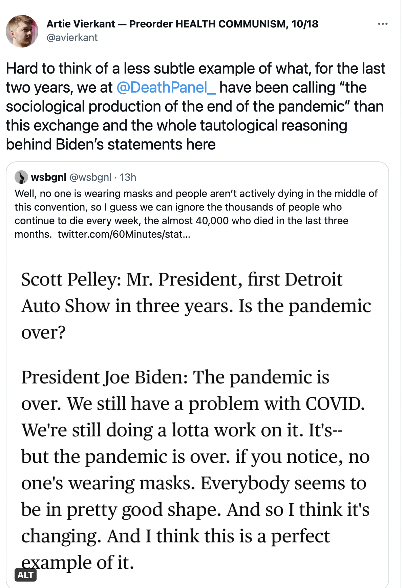
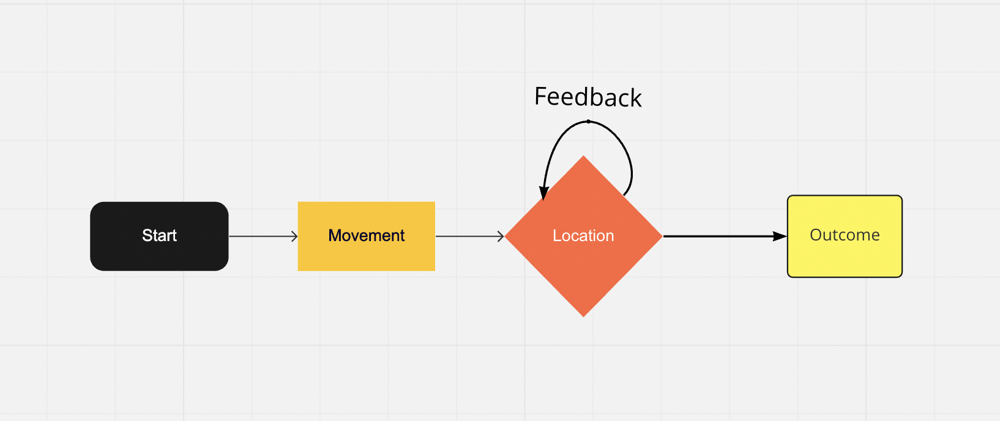
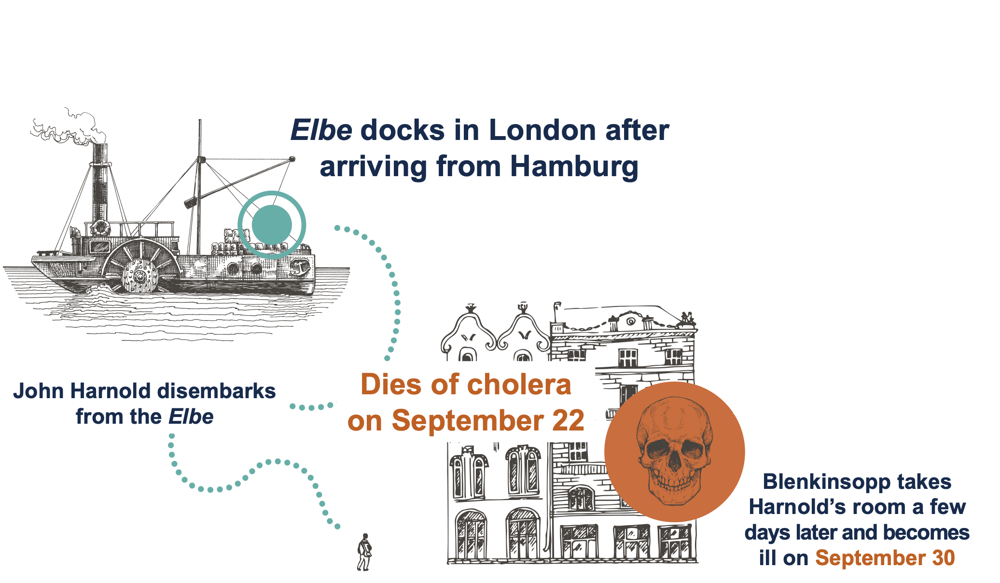
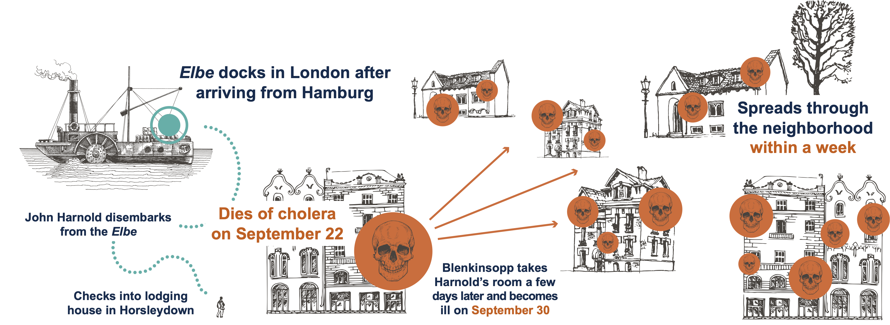

Miasma!
PUBHLTH 405
Social Epidemiology of Infectious Disease
University of Michigan School of Public Health
Jon Zelner
jzelner@umich.edu
epibayes.io

Agenda
Meet John Snow, systems thinker
What does it mean to take a systems perspective on infection history?
How did Snow use different levels of scale to push back on the ☁️miasma☁️ theory of cholera infection?
If time: pathogen project groups work
Here we are, relevant as ever…

John Snow, pioneering anesthesiologist
“He sits alone in his cluttered flat,🐸 frogs croaking around him, illuminated only by candlelight. After a few minutes tinkering…he fastens the mouthpiece over his face and releases the gas. Within seconds, his head hits the desk. Then minutes later, he wakes, consults his watch through blurred vision. He reaches for his pen, and starts recording the data.”

Making use of evidence across scales is a central theme of Snow’s analysis of the 1854 Cholera outbreak.

He uses a systems perspective to get a sense of how things work across scales
“The bird’s-eye view of the city, the sense of the urban universe as a system, as a mass phenomenon—this imaginative breakthrough is as crucial to the eventual outcome of the Broad Street epidemic as any other factor.” (Johnson 2007, 97)
What is another term that describes this approach?
(Hint: 🧩)
What are the elements of a transmission system?
Components
Pathogens 🦠
People 🧑🤝🧑
Infrastructure 🏚️
Mechanisms
Reproduction 🔄
Short-scale movement 🚌
Long-distance movement ✈️
Person-to-person contact 👩👩👦👦
Snow’s sensitivity to patterns across scales allowed him to see things other’s didn’t
Another word for this is consilience
“In science and history, consilience…is the principle that evidence from independent, unrelated sources can”converge” on strong conclusions. That is, when multiple sources of evidence are in agreement, the conclusion can be very strong even when none of the individual sources of evidence is significantly so on its own.”(Wikipedia definition of consilence)
Your turn to make connections across scales

First: Discuss how Snow built his understanding with information from multiple sources (~10m)
Personal experience
1848 roominghouse outbreak
1849 Thomas St. flats outbreak
William Farr’s tables of cholera deaths
Anything else?
Some other questions that might be helpful to chew over in your groups
Why was miasma a compelling explanation for outbreaks of Cholera in South London?
What aspects of Snow’s life made him an ideal investigator of the cause of Cholera?
What are some modern parallels to the strong hold that miasma theory had on 19th century Londoners?
How did Snow start to use evidence at different scales to push back against the miasmatists?
Snow’s Road to the 1854 Outbreak
Rewind to 1848

Rewind to 1848

Rewind to 1848

I smell a rat…
“[I]t was stretching matters beyond belief to suggest that the room should suddenly become prone to those poisonous vapors the very day it was occupied by a sailor traveling from a city beseiged by the disease.”
In Snow’s words
“Who can doubt that the case of John Harnold…was the true cause of the malady in Blenkinsopp…And if cholera be communicated in some instances, is there not the strongest possibility that it is so in the others - in short, that similar effects depend on similar causes.”
What happened in the 1849 Thomas street outbreak that drove these ideas home for Snow?
“Whether you looked at the evidence on the scale of an urban courtyard or on the scale of entire city neighborhoods, the same pattern repeated itself: the cholera seemed to segment itself around shared water supplies. If the miasma theory were right, why would it draw such arbitrary distinctions? Why would the cholera devastate one building but leave the one next door unscathed? Why would one slum suffer twice the losses as a slum with arguably worse sanitary conditions?” (Johnson, p.74)
The Grand Experiment
What was the experimentum crucis?
Snow took advantage of changes in infrastructure to compare neighborhoods served with contaminated and clean water.
Example of a natural experiment.
Exploits some kind of random variation in exposure to make causal inferences where they would otherwise not be possible.
What are some other possible examples of a natural experiment?
Changes in London water service provided an opportunity for Snow
- Around 1850, parliament mandated that all water companies move their intake beyond the outflow of the Thames by 1855
- In south London there were two major water suppliers: Southwark & Vauxhall (S&V) and Lambeth.
- Lambeth moved the intake up in 1852, but S&V waited until 1855.

Snow’s Water Supply Map
Snow’s map of water suppliers
Conducting the grand experiment
Snow divided data into sub-districts of South London organized by water supplier.
12 were served by only S&V, 3 by Lambeth alone
1/100 people died of Cholera in S&V only districts, but none among the > 14K living in Lambeth districts
What made the Grand Experiment inconclusive?
16 sub-districts were served by both suppliers
Within these districts, water service was overlapping at a fine scale.
Snow went door-to-door…but people living in these districts often had no idea where their water came from.
So, he collected water from them and tried to find evidence of the causal agent of Cholera in the sample